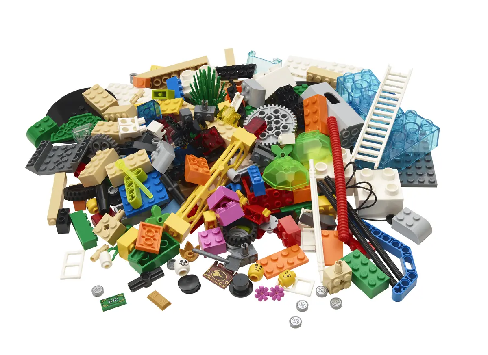

LEGO® Serious Play® — when the conversation is stuck, build it instead
Some things are hard to say out loud. A model made of LEGO bricks is easier to talk about than a direct opinion. That distance — between the person and the model — is what makes LEGO® Serious Play® work in situations where a straight conversation would stall or stay on the surface.

What is LEGO® Serious Play®?
LEGO® Serious Play® is a facilitated method where participants build 3D models to represent their ideas, challenges, and strategies. Everyone builds. Everyone explains their model. Nobody can stay silent or let someone else speak for them.
The method works because hands engage the brain differently than words do. Building a model surfaces things that a verbal answer would smooth over. The result is a conversation with more honesty and more nuance than a standard discussion.
When LEGO® Serious Play® is not the right tool
- When the challenge is purely technical or analytical — there are better tools for data problems
- When the group has fewer than 2 hours — the method needs time to work properly
- When the organisational culture strongly resists anything that looks like "play" — the resistance will drown the output
- When the session needs to scale beyond 40 people — other methods handle large groups better
How we facilitate LEGO® Serious Play®
The building challenge is everything. A weak question produces weak models. We design questions that get people past the obvious answer and into the insight they didn't know they had.
- We understand your challenge before we design the session
- We build a sequence of challenges — individual, then shared, then systemic
- We facilitate the sharing: what does the model mean? what surprised you?
- We harvest the insights and connect them to concrete decisions
LEGO® Serious Play® in practice
Leadership team: surfacing what the strategy document missed
A leadership team had agreed on a strategy — on paper. When we asked them to build what the strategy looked like in practice, five different models appeared. The divergence that had been invisible in the document became visible in 45 minutes. The conversation that followed was the one they needed to have.
Post-merger: building the team identity from both sides
After a merger, two teams struggled to see themselves as one. LEGO® Serious Play® gave each person a way to show what they brought and what they needed. The shared model they built together became the reference point for the first year of collaboration.
Want to see what your team would build?
Tell us the challenge. We'll design the session around it.